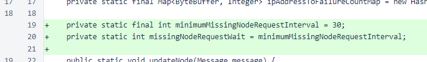
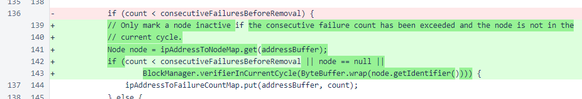
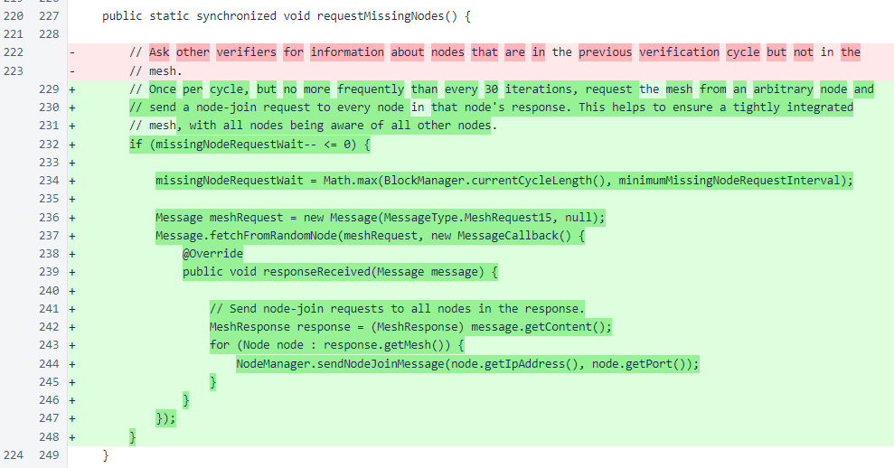
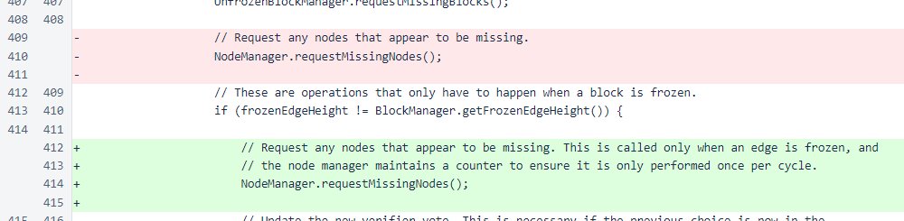

Nyzo version 471 (commit on GitHub) is a minor update that improves density of connections in the mesh.
In an ideal state, every node in the mesh is connected bidirectionally (incoming and outgoing) with every other node in the mesh, and nodes that leave the mesh are removed promptly so that the remaining nodes are not wasting effort sending messages to nodes that no longer exist.
This update is in response to an issue that arose in the mesh between verifier sh (27944ab61d3725d6-76366baad6fe6776-0a1acc209206f856-a04515a8b6e49e5e) and six other nodes. With an actual size of 49, verifier sh only saw 43 other nodes, and six other nodes in the mesh (Nyzo.1, Nyzo.2, Stingray, ZALZIBAB, ZALZIBAB1, and NYZO_CHIVAS) only saw 48 other nodes each.
While the NodeManager class was designed to remove inactive nodes, this situation was problematic for two reasons. First, while removing nodes quickly when they leave is important, removing nodes in the current verification cycle is overly aggressive. Second, if a node is removed but starts responding to messages again, all connections to and from that node should be reestablished quickly.
This problem did not cause any block production or consensus issues, but it would be possible for a more extreme problem of the same nature to cause problems in the future, so an update is warranted.
The code changes are simple and concise. At the top of the NodeManager class, a constant and static variable were added. The constant defines the minimum interval at which a new reconnection process can occur (30 blocks), and the the static variable tracks the number of blocks until the process will be performed again.
The next change in the NodeManager class is the addition of conditions that prevent a node from being marked as inactive when a message failure occurs. The node associated with the IP address is fetched from the appropriate map, and the node is only marked as inactive if the identifier of the node is not in the current cycle.
The final change in the NodeManager class is an implementation of the previously empty requestMissingNodes() method. This method is invoked once per block frozen, and the counter ensures that the actual work of the method is performed no more frequently than once per cycle.
In the Verifier class, the invocation of the NodeManager.requestMissingNodes() method has been moved into the code block that is only performed when a blockchain block is frozen.
